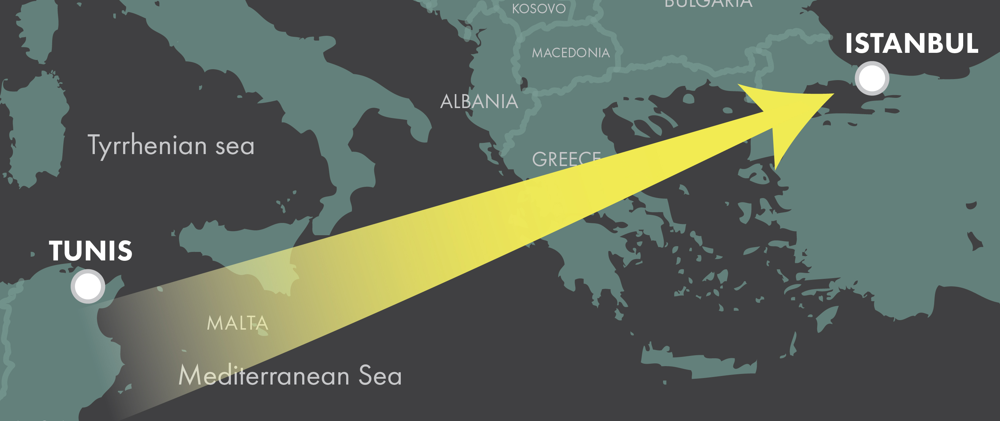

The Preacher
Kamel Zarrouk
Hometown Hero
Kamel Zarrouk was born in or around 1973, a native son of Tunis’s oldest slum.Jebel Al-Ahmar, sprawling along the capital’s northwestern periphery, is known for being overcrowded, underdeveloped, and home to an increasingly politicized salafist community. Little is known of Zarrouk’s early life—it was rumored he once worked as a nightclub bouncer—but by his 30s, he had taken up preaching at Jebel Al-Ahmar’s Ettawba Mosque and at the campus mosque of a nearby university. After the 2011 revolution, Zarrouk joined Ansar al Shari`a in Tunisia (AST) and was often referred to as the group’s deputy leader.
AST Leader
Zarrouk became a household name touring the country with AST’s “da`wa tents,” and his incendiary sermons circulated widely on social media. (“15 minutes will change your life!” some fans liked to repeat.) Zarrouk used his platform to exhort Tunisians to join jihadi groups in both Libya and Syria. He notoriously compared Osama bin Laden to the Prophet Muhammad’s companions and made death threats against anti-Islamist members of the Tunisian government and press. Zarrouk’s role in recruiting youth to jihadi groups came under growing scrutiny in 2013 as government pressure on jihadi-salafi activism more broadly was rising. After evading several arrest attempts, Zarrouk fled the country in early 2014 to join the Islamic State group (ISG).
Hijrah and ISG Career
On February 1, 2014, Tunisian media reported that Zarrouk had fled across the border to Libya. Two weeks later, ISG social media accounts trumpeted Zarrouk’s arrival in Raqqa, Syria. Zarrouk resumed preaching in Syria as a muhajir to the caliphate, the ISG flag often propped behind him in his videos. He was soon joined by his wife—some claim she took a direct flight from Tunis to Turkey—suggesting a commitment to building a life in the caliphate’s territory.
Death and Legacy
According to ISG sources, Zarrouk was killed in a U.S. airstrike on Raqqa in 2015. The first media reports on his death surfaced in June, and Zarrouk’s family confirmed his death that October. As word of Zarrouk’s death spread, jihadi Twitter filled with eulogies. “God made him the reason for the recruitment of thousands of Tunisian youth [to jihad] in Iraq and Syria…” one wrote. “Tunisia is a producer of men.”